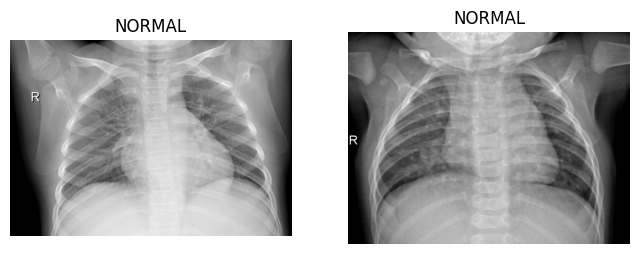
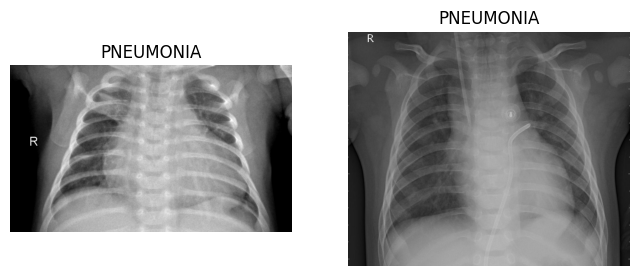
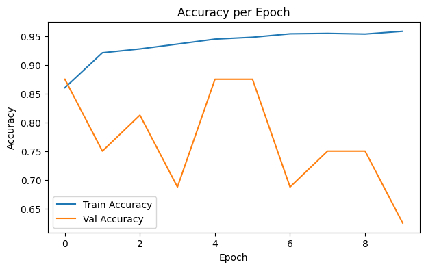
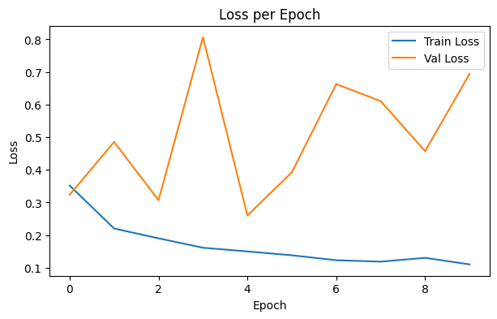
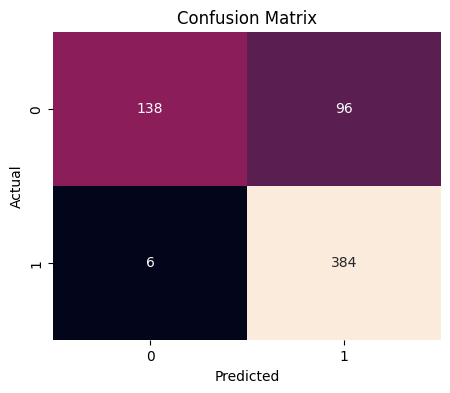

NORMAL vs PNEUMONIA
Öğrenci: Mahmoud Karzoun — KTO Karatay Üniversitesi
Bu projede, göğüs röntgeni (Chest X-Ray) görüntüleri kullanılarak NORMAL ve PNEUMONIA sınıflarının Evrişimli Sinir Ağları (CNN) ile otomatik olarak sınıflandırılması amaçlanmıştır.
Model TensorFlow ve Keras kütüphaneleri kullanılarak Google Colab ortamında eğitilmiştir. Veri seti Kaggle platformundan alınmıştır.




